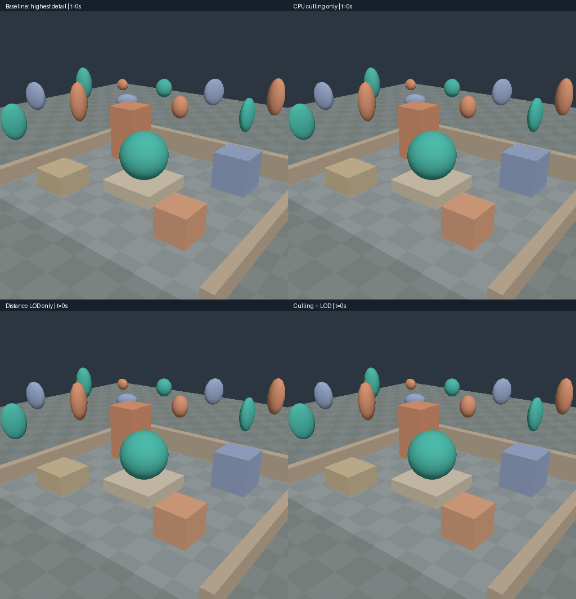
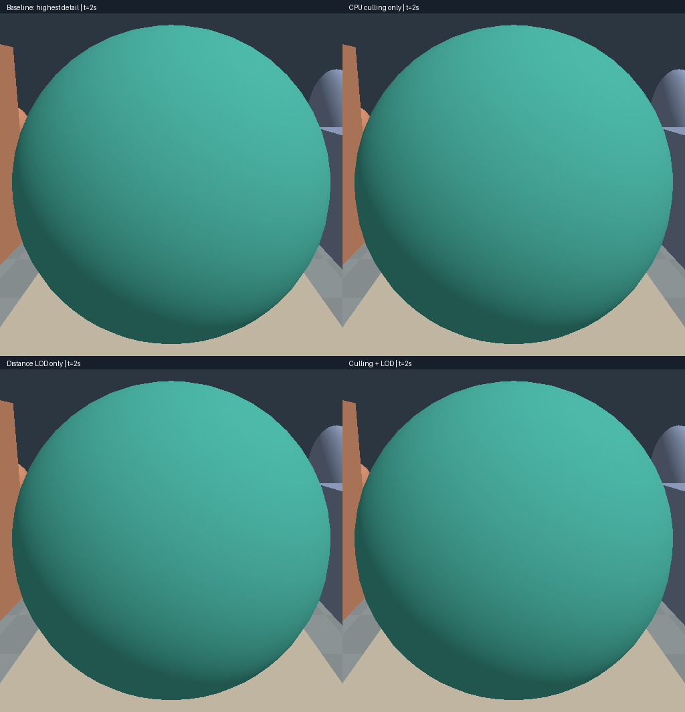
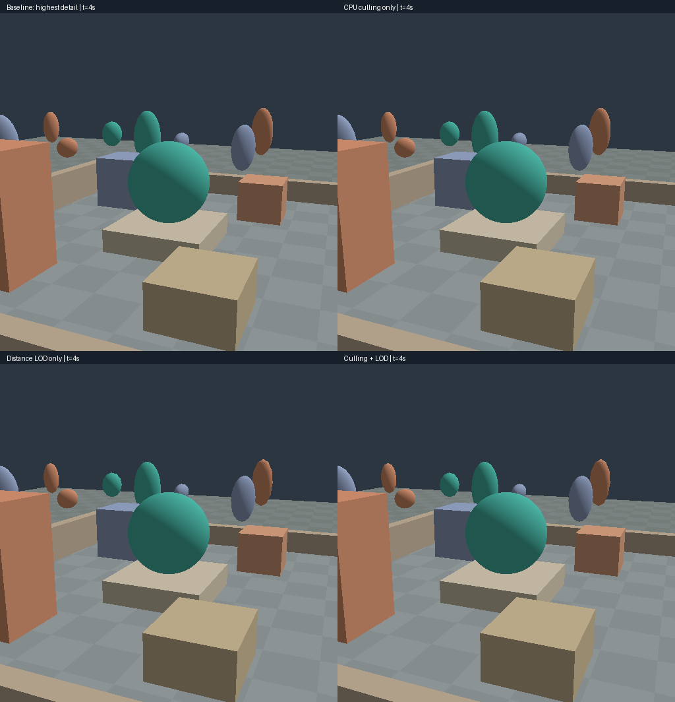
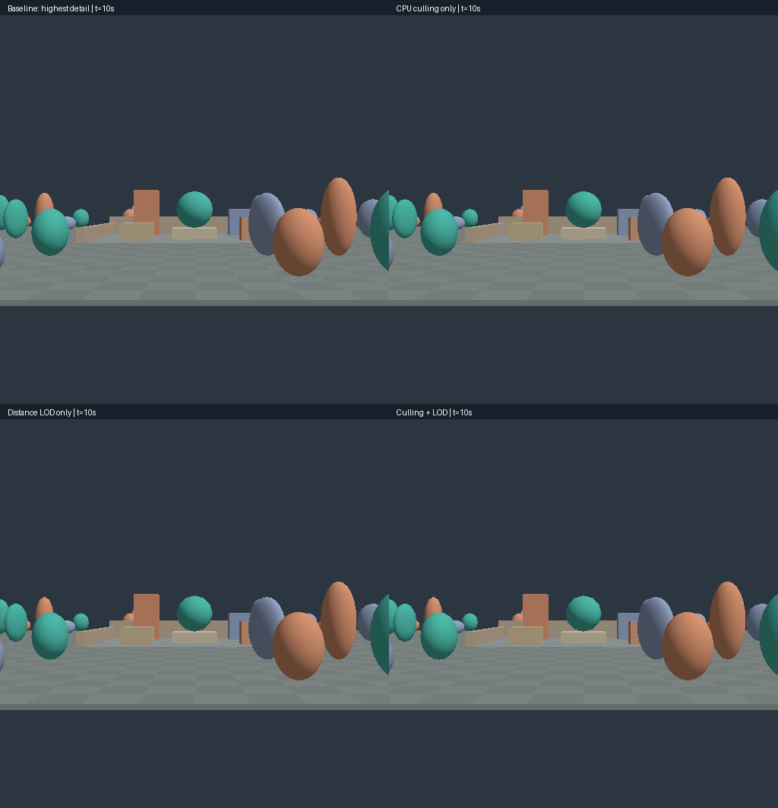
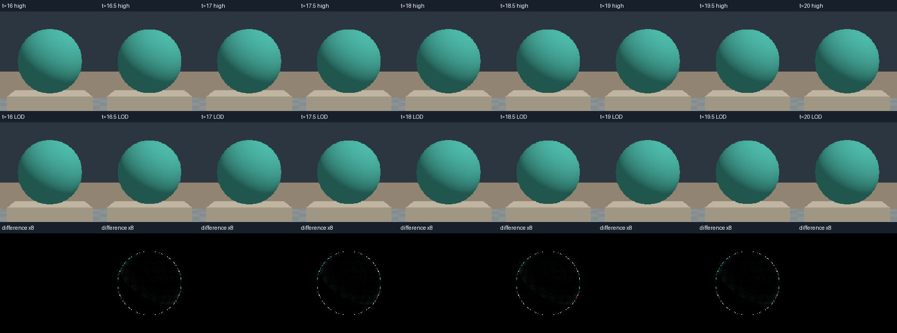
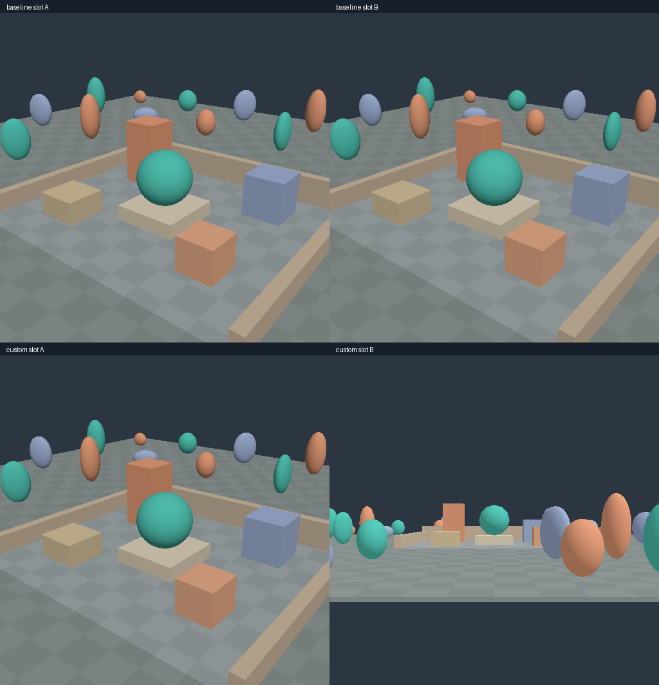

008 · CPU 視錐台カリングと距離 LOD
この実行では CPU・ドライバー負荷の揺れが大きく、両方を有効にすれば常に速いという結論は出しません。描画数・三角形数の削減と表示誤差は再現しましたが、性能面での候補は実機で繰り返し確認する必要があります。
実ブラウザー・ハードウェア GPU・Android での動作と、GPU タイムスタンプは未検証です。
目的と問い
画面外の候補を省くカリングと、距離に応じて形状の詳細度を変える LOD を比較します。描画数・三角形数の削減と表示誤差を確認し、CPU 時間を反復計測します。
比較条件
固定した条件
中庭・seed0・カメラ経路・時刻・512×512 の解像度・マテリアル・固定光源を、方式間で揃えます。
以下の画像と数値は、ネイティブの release ビルドで llvmpipe software CPU / GL を使い、描画結果を実際に読み戻したものです。
20 秒の経路を終端で固定し、0.25 秒刻みで 81 フレーム保存しました。最初は斜めからの視点、近接、左画面端を横切る移動の順に進みます。その後、カメラは中心球から 10→26→10 units の距離を往復し、12/24 の両境界を跨ぎます。最後の 4 秒は、中心球から 12±0.04units の範囲を繰り返し往復します。
time が変えるのはカメラだけで、光源とシーンは固定です。core は経路の終端より後の時刻を入力しても、最後のカメラを保持します。Web 再生は 20 秒でループします。A/B 比較は 50:50 と同じ内部倍率で行います。カメラ経路を保存しています。
限定的な画像誤差の目安は、MAE≤0.5 byte かつ channel 差>8 の pixels≤1% です。
変更した条件
最高詳細度かつカリングなし、カリングのみ、LOD のみ、両方の四方式を比較します。
計測方法と集計
8 時刻×4 方式×3 repeat×10 samples=960 samples を測り、各ブロックで 4 warmups を行いました。方式の順序は repeat ごとに入れ替えています。初回の形状・パイプラインの準備と、描画結果の読み戻しは計測に含みません。cpu_encode には、uniform の書き込み、コマンド生成、シーンのパス、100% の同じ寸法への拡大パス、finish を含みます。frustum と LOD のリスト構築は別列に記録します。パス数は 1 scene pass +1 upsample pass です。シーンの draw 数は描画候補のオブジェクト数と等しく、upsample draw=1 です。全方式で同じ表示経路を使います。
ネイティブの完了までの経過時間には、CPU による判断、encode、submit、キュー待ちを含みます。native_frame_interval は同じブロック内で実測した開始から次の開始までの間隔で、各ブロックの最初は空欄です。VSync/rAF の間隔や GPU タイムスタンプではありません。GPU ms も空欄です。
集計値は 30 samples をまとめた中央値です。frustum/LOD は µs、encode/completion は ms で示します。
tested=0 はカリングを実行しないことを意味します。visible は保守的に描画対象として残した候補数で、実際に見えるピクセル数ではありません。draw/triangle は送信したコマンドから求めた正確な個数で、GPU のハードウェアカウンターではありません。
行った実装
形状と境界の準備
実装は Web/native 共通です。
元の床・囲い・箱・中央球を維持し、外側の地面と、回転・非一様スケールを適用した 40 個の楕円体を追加しました。固定配置で、入力乱数はありません。各 LOD の形状は起動時にワールド座標へ変換し、一度だけアップロードします。法線はスケールで割って Y 回転し、逆転置行列に相当する変換をしたうえで正規化します。境界には、ローカル AABB の 8 頂点をワールド座標へ変換して最小値・最大値を取った、全 LOD 共通の保守的なボックスを使います。全オブジェクトと範囲を保存しています。
カリングと距離による詳細度の選択
カリングは画面外の候補を省きます。壁や前景に隠れた物体も、視錐台内なら描画します。遮蔽物による occlusion culling ではありません。
列優先の VP から left/right/bottom/top/near/far の 6 平面を抽出し、正規化します。WebGPU の near は row2、far は row3-row2 です。AABB の positive vertex が平面の外側に 0.0001 world units より遠い場合だけ棄却します。接触・交差しているものは残します。カメラ平面の値が有限でない場合も、棄却せず残します。CPU の frustum フェーズには、平面の抽出、51 個の境界判定、visibility flags の構築を含みます。baseline/LOD-only の同フェーズでは、すべて true のフラグを作るだけです。
LOD は実際に別のインデックス・頂点を持つメッシュへ切り替えます。12/24 world units を境界として、球の詳細度を 1840→440→100 triangles/sphere に変えます。床・箱の詳細度は変えません。51 オブジェクト中、41 が複数の詳細度を持ちます。
LOD の距離には、eye から変換後の AABB 中心までのユークリッド距離を使います。distance<12 は high、12≤distance<24 は medium、24≤distance は low です。ちょうど境界では低い詳細度を選びます。履歴・ヒステリシス・クロスフェードは使いません。同時刻へシークしても同じ結果になります。CPU の LOD/selection フェーズには、距離判定と、順序の安定した描画リストの構築を含みます。
共有バッファーと描画バッチ
56,595 vertices×36 bytes＋293,070 indices×4 bytes=3,209,700 bytes（約3.06MiB）の静的な形状データを、全方式・A/B で共有します。全 LOD を保持し、Core の起動時に別の実験を選んでいてもアップロードします。この容量には、アラインメント・ドライバー・既存実験による確保を含みません。LOD はこの実装のバッファー容量を減らしません。オブジェクトごとに単一の描画バッチを使い、棄却したバッチの描画だけを省きます。別実験 issue5 のインスタンシングは変更しておらず、今回の実験とも組み合わせていません。
結果
同時刻の画像差の観察結果
81 時刻×4 方式の 324 画像を保存しました。カリングのみの結果は、同時刻の最高詳細度のベースラインと全ピクセルが一致しました。両方を有効にした結果も、同時刻の LOD のみの結果と全ピクセルが一致しています。これは試した経路・解像度で誤って描画対象を除外しなかった証拠であり、全入力での保証ではありません。
比較条件で定めた目安を満たさなかったフレームはありませんでした。フレーム全体の MAE の最大値は 0.2551 byte です。細い輪郭の局所差や、しきい値を往復する際のちらつきが小さいという保証ではありません。

同じ経路で観察した形状の飛びとちらつき




中央の切り抜きは、512² 画像の x/y176..336 を最近傍で拡大したものです。上が同時刻の high、中央が LOD、下が絶対差分の 8 倍です。12±0.04units の往復によって、境界で一度に切り替わる挙動を意図的に示しています。
静止した距離で繰り返し読み戻した結果は一致します。一方、境界を跨ぐカメラの揺れでは high/medium が往復するため、形状の飛びやちらつきを完全には避けられません。
描画数と CPU 時間の実測結果
t=0 では、カリングによって 51→22 draw、75,550→22,190 triangles に減りました。両方を有効にすると 2,330 triangles になります。frustum 判断の中央値は約 1µs で、コストは 0 ではありません。t=10 では、カリングのみの全 repeat のサンプルから求めた完了時間の中央値は 6.047ms で、baseline の 5.088ms より遅い結果でした。t=4 の両方を有効にした条件では、repeat ごとの中央値が 1.882–8.548ms に広がりました。
| t | mode | submitted | triangles | frustum µs | LOD/list µs | encode ms | completion ms |
|---|---|---|---|---|---|---|---|
| 0 | Baseline: highest detail | 51 | 75550 | 0.10 | 1.52 | 0.049 | 3.712 |
| 0 | CPU culling only | 22 | 22190 | 1.14 | 1.18 | 0.045 | 3.124 |
| 0 | Distance LOD only | 51 | 27050 | 0.09 | 1.67 | 0.045 | 2.190 |
| 0 | Culling + LOD | 22 | 2330 | 0.90 | 1.07 | 0.040 | 1.770 |
| 2 | Baseline: highest detail | 51 | 75550 | 0.10 | 1.64 | 0.054 | 3.971 |
| 2 | CPU culling only | 13 | 12942 | 1.03 | 0.80 | 0.046 | 3.026 |
| 2 | Distance LOD only | 51 | 29350 | 0.08 | 1.70 | 0.042 | 2.954 |
| 2 | Culling + LOD | 13 | 4542 | 0.80 | 0.83 | 0.043 | 2.752 |
| 4 | Baseline: highest detail | 51 | 75550 | 0.10 | 2.28 | 0.074 | 4.885 |
| 4 | CPU culling only | 20 | 18510 | 0.99 | 1.12 | 0.042 | 2.760 |
| 4 | Distance LOD only | 51 | 30830 | 0.09 | 1.99 | 0.049 | 2.980 |
| 4 | Culling + LOD | 20 | 4210 | 0.95 | 1.24 | 0.045 | 2.486 |
| 8 | Baseline: highest detail | 51 | 75550 | 0.12 | 2.23 | 0.081 | 6.119 |
| 8 | CPU culling only | 25 | 27710 | 1.25 | 1.37 | 0.063 | 4.603 |
| 8 | Distance LOD only | 51 | 23230 | 0.09 | 2.25 | 0.064 | 2.893 |
| 8 | Culling + LOD | 25 | 5430 | 1.04 | 1.22 | 0.048 | 2.414 |
| 10 | Baseline: highest detail | 51 | 75550 | 0.10 | 2.34 | 0.079 | 5.088 |
| 10 | CPU culling only | 36 | 47950 | 1.93 | 2.20 | 0.081 | 6.047 |
| 10 | Distance LOD only | 51 | 11050 | 0.09 | 1.72 | 0.044 | 2.160 |
| 10 | Culling + LOD | 36 | 6490 | 1.01 | 1.46 | 0.042 | 2.302 |
| 12 | Baseline: highest detail | 51 | 75550 | 0.10 | 1.46 | 0.050 | 2.993 |
| 12 | CPU culling only | 25 | 27710 | 0.90 | 0.94 | 0.038 | 2.422 |
| 12 | Distance LOD only | 51 | 23230 | 0.09 | 1.73 | 0.045 | 1.710 |
| 12 | Culling + LOD | 25 | 5430 | 0.92 | 1.17 | 0.040 | 1.407 |
| 16 | Baseline: highest detail | 51 | 75550 | 0.09 | 1.17 | 0.035 | 2.726 |
| 16 | CPU culling only | 21 | 20350 | 0.89 | 1.00 | 0.040 | 1.991 |
| 16 | Distance LOD only | 51 | 29810 | 0.08 | 1.35 | 0.034 | 1.763 |
| 16 | Culling + LOD | 21 | 3970 | 0.80 | 1.06 | 0.039 | 1.390 |
| 16.5 | Baseline: highest detail | 51 | 75550 | 0.09 | 1.27 | 0.044 | 2.733 |
| 16.5 | CPU culling only | 21 | 20350 | 0.89 | 1.02 | 0.041 | 1.982 |
| 16.5 | Distance LOD only | 51 | 28410 | 0.09 | 1.59 | 0.042 | 1.621 |
| 16.5 | Culling + LOD | 21 | 2570 | 0.80 | 0.97 | 0.037 | 1.290 |
スロットの独立性を確認した範囲
ネイティブのテストハーネスでは、A/B の設定・uniform・ターゲット・描画選択が独立していることを確認しました。逆順での描画と再描画の一致、不正な WGSL/ABI の拒否、カスタムシェーダーの復元も検証しています。surface/DOM を含む一連の動作を検証したものとは同一視しません。

考察と適用範囲
画像誤差の目安に収まる中遠景の検証用としては候補ですが、本番のカメラで安定させるにはヒステリシスまたはクロスフェードと、実機・実際の表示サイズでの確認が必要です。LOD を「見た目が同じ」とは判定しません。
小さなシーンでは、カリング判断の固定コストが削減分を上回る場合があります。CPU ソフトウェアラスタライザーでの三角形削減効果を、ハードウェアの速度向上率に読み替えないでください。
分布・外れ値を確認し、全体をまとめた単一の値だけで優劣を決めないでください。
再現と証拠
保存した記録
全フレームの差分には、同時刻の baseline との差と、連続するフレーム間での符号付き残差 signed(LOD-baseline) の変化を保存しています。後者はカメラ移動による baseline の変化を差し引く補助指標であり、知覚的なちらつきの量ではありません。324 画像の一覧も保存しています。
repeat ごとの中央値と p95、フレーム間隔、submit/queuewait は集計、全サンプルはCSVに保存しています。
経路全体の個数データを保存しています。
検証、条件、測定ソースのスナップショットを保存しています。測定時点では、報告001–007と各測定スナップショットを byte 単位で保持しました。公開担当が検証した最終 commit は、source snapshot と runtime metadata に記録します。
再現コマンドと操作
RENDERING_LAB_CULLING_OUTPUT="$PWD/evidence/culling-native" cargo test --locked --release -p rendering-core --test culling_smoke -- --ignored --nocapture
python3 scripts/build-culling-evidence.py
python3 scripts/build-culling-evidence.py --check
python3 scripts/build-culling-evidence.py --self-testWeb 実験09で A に baseline、B に both を選び、time を揃えて停止/step/PNG/CSV を使います。Core はシェーダーの成功時だけ置き換え、古い実験を保持します。単体テストには、平面・near・境界、負のスケールを持つ形状の境界、全 LOD 頂点が境界に含まれること、法線、カメラのシーク、81 時刻で独立したクリップ点の判定との比較を含みます。